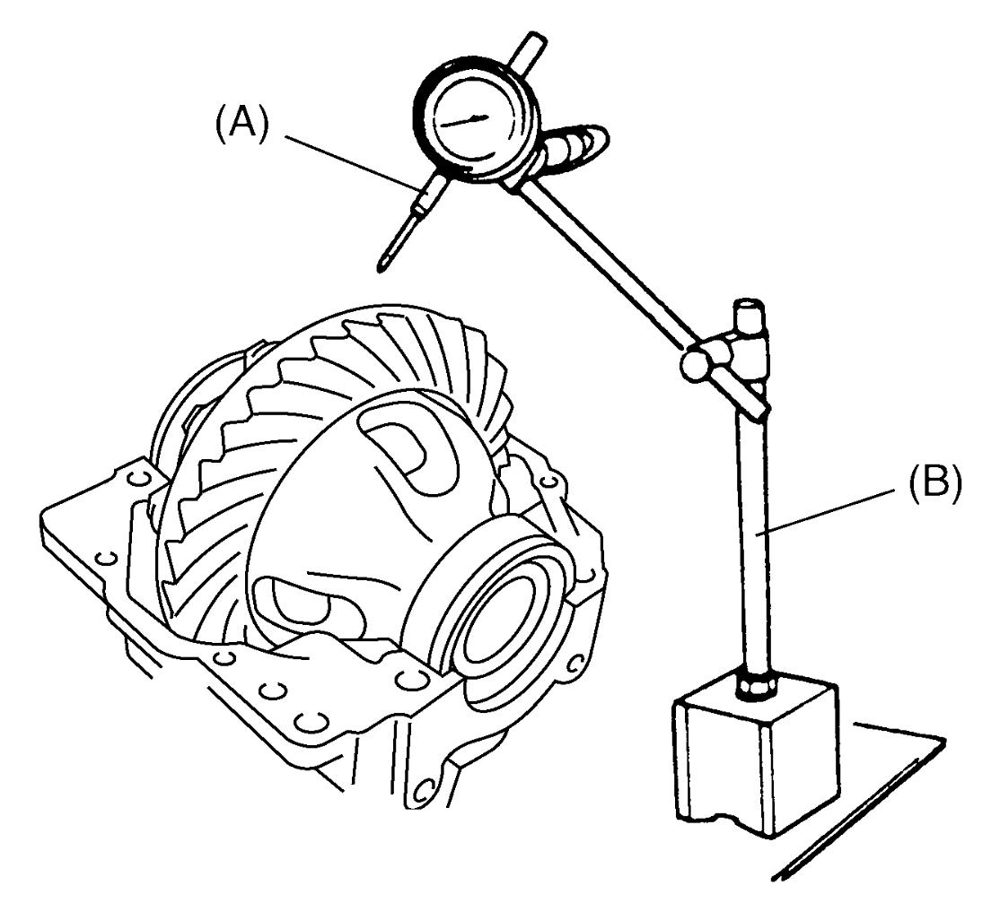

3B
| Rear Differential Inspection |
Check damage on gear teeth and bearing rotation and replace defective part with new one if any.
Bevel Gear Backlash
1)Remove rear drive coupling case from differential carrier. 
2)Remove differential cover and differential cover plate from differential carrier.
3)To measure bevel gear backlash, set dial gauge at right angle to bevel gear tooth, fix bevel pinion and read dial gauge while moving bevel gear.

Bevel gear backlash
0.1 – 0.15 mm (0.004 – 0.006 in.)

 "Expand image")
4)If check result is not as specified, select differential side shim and adjust bevel gear backlash.
After adjusting allocation on left / right side, measure bevel gear backlash again.
After adjusting allocation on left / right side, measure bevel gear backlash again.
Bevel Pinion Bearing Preload (Bevel Pinion Rotational Torque)
1)Remove rear drive coupling case from differential carrier.
2)Remove the following parts from differential carrier:
•Differential cover
•Differential cover plate
•Differential case assembly
•Differential cover plate
•Differential case assembly
3)Turn bevel pinion more than 15 revolutions. Use torque wrench (1) to measure preload.

Bevel pinion bearing preload (Bevel pinion rotational torque)
1.3 – 2.6 N·m (0.13 – 0.27 kgf-m, 1.0 – 2.0 lbf-ft) (rotational speed about 50 rpm)
 "Expand image")
4)If preload is out of specified range, replace spacer and bevel pinion nut with new ones.
Companion Flange Runout
1)Remove rear drive coupling case from differential carrier.
2)Using special tools and dial gauge, measure runout of companion flange (1) inside diameter.
Mark (2) on companion flange outside diameter where runout is maximum value in center direction. If measurement exceeds runout limit, replace companion flange with new one and measure runout again.
Mark (2) on companion flange outside diameter where runout is maximum value in center direction. If measurement exceeds runout limit, replace companion flange with new one and measure runout again.
Companion flange inside diameter runout
Limit: 0.1 mm (0.004 in.)
 "Expand image")